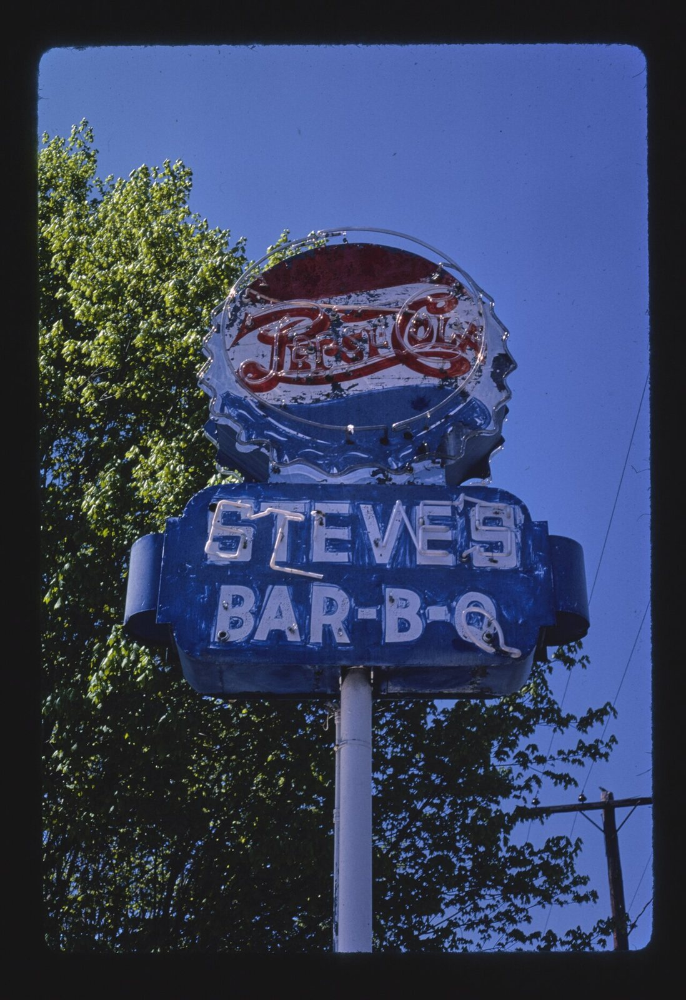
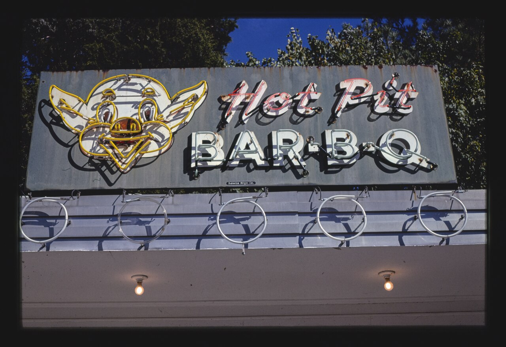
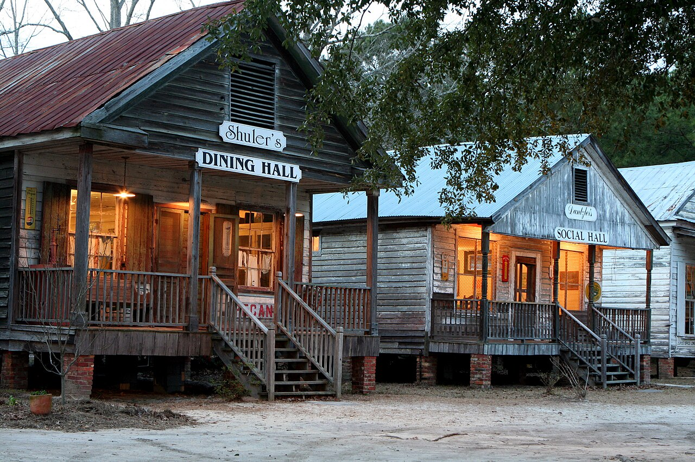
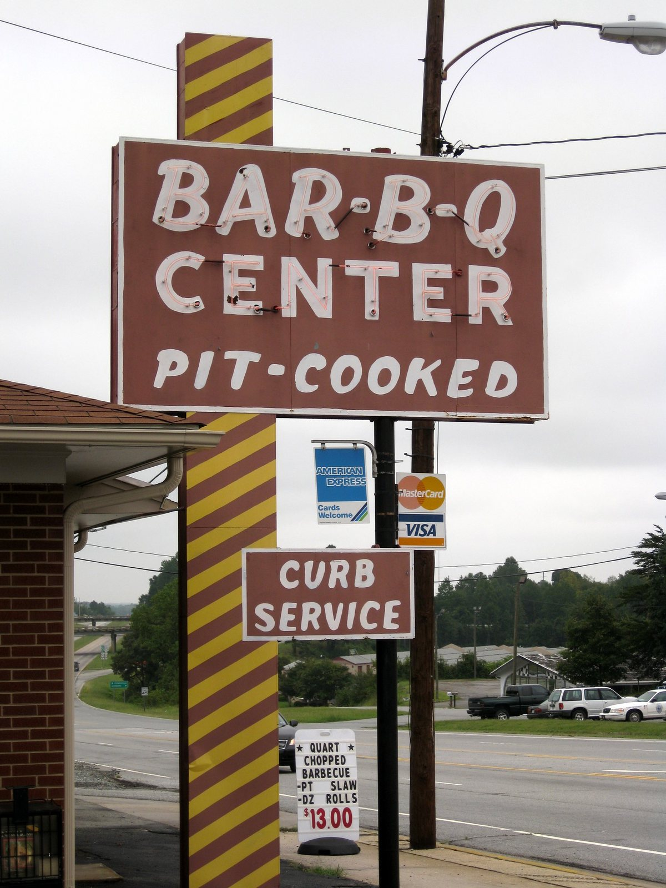

pig artroadside barbecue signs
also: Bar-B-Q signs · the pylon sign · pit signs

The sign a barbecue place puts at the road: a steel pylon with a lit box on top, neon or bulbs picking out a name, a bottler's disc above it, and a changeable letterboard underneath for the day's news. Most spell the word Bar-B-Q, hyphenated, because three short units fit a tall narrow cabinet better than nine letters do. What survives in photographs that anyone may reuse comes almost entirely from one man's slides: John Margolies drove American highways from the late 1960s to 2008 photographing exactly this, and the Library of Congress bought the archive and the rights with it.
Who paid for the sign
Often not the restaurant. Steve's Bar-B-Q in Spencer, North Carolina, photographed by Margolies in 1982, is a blue steel cabinet with STEVE'S and BAR-B-Q in white neon script on two lines — and above it, larger than either, a Pepsi-Cola bottle cap in red, white and blue neon, chipped and weathered. The soft-drink bottler supplied and maintained signs like this in return for the top panel and the exclusive pour.
Inference — that arrangement explains a good deal about how these signs look. The restaurant's name sits under a national brand's disc, in the bottler's palette rather than its own, and the proportions are the bottler's too. A place that later bought its own sign generally got a bigger pig and a smaller cola.
The pig on top
Where the pit paid for its own, the pig went above the letters. Margolies photographed Maurice Bessinger's West Columbia sign in 1988 from two angles: a pylon in white and pale-blue stripes, a red panel of BAR-B-Q in bulb-lit block capitals with a chase of yellow lamps round the border, the pig Little Joe standing on the crown, and below the box a white panel reading Maurice Bessinger's Flying Pig, Coast to Coast. Under all of it the letterboard, on the day, said NOW HIRING WAITRESSES.
The layout is the standard one: brand on top, product word in the largest type, the human business — hours, hiring, specials — on a board somebody changes with a suction cup on a pole. Bessinger's offices and pits burned in October 2024; the sign was still standing afterwards.


The Margolies archive, and why this record leans on it
John Margolies photographed roadside commercial architecture for about forty years and left 11,710 colour slides. The Library of Congress digitised them and bought the intellectual property, so the whole archive carries no known restrictions on publication — which makes it the largest freely reusable picture file of American signs in existence, and the reason a page about Carolina barbecue signs can be illustrated at all.
He shot only a handful in the Carolinas that touch this subject: Bessinger's twice, Steve's at Spencer once. Elsewhere in the same file are the Red Pig at Nahunta, Georgia, and a plain BAR-B-Q at Brownsville, Tennessee, bulbs round a rectangle on a pole in 1979. Inference — he was driving routes, not surveying a cuisine, so what he caught in any state is a function of which highway he was on that week.
The practical consequence for this project: the Carolina signs standing today — Lexington's, Ayden's, Hemingway's — are photographed constantly, and very few of those photographs are free to reuse.

The board and the plaque
Not every barbecue sign is lit. At the Lone Star BBQ and Mercantile at Santee, South Carolina, the signs are wooden boards hung from the porch roofs of old frame buildings moved to the site and set on brick piers: Shuler's DINING HALL on one, Dantzler's SOCIAL HALL on the next, painted in a serif face with the family name above the room's function. This is the older Carolina form — the building carries the sign rather than a pole beside it — and it reads at walking pace rather than at fifty miles an hour.
The third kind is cast. A bronze tablet set into a stucco wall in Lexington commemorates the site of the first known business selling Lexington-style barbecue, prepared under tents on open pits, and records that the North Carolina House of Representatives designated the city the Hickory-Cooked Barbecue Capitol of Piedmont North Carolina. The Lexington City Council commissioned it on March 11, 1985. Inference — a town that has a plaque made has stopped advertising and started claiming.

{kind=link}

{kind=link}
Facts
| kind | sign |
|---|---|
| state | both |
| region | The Carolinas, The American South |
| links | John Margolies Roadside America Photograph Archive — Wikimedia Commons |
| confidence | medium · needs verification · updated 2026-09-16 |
Its kin
Pictures

Sources
- John Margolies Roadside America Photograph Archive, 1972-2008 — John Margolies · link
- Wikimedia Commons · link
- Maurice Bessinger — Wikipedia · link
- Flickr — individually licensed photographs · link
Where it came from: Cited a source we name · Harvested pulled from an open dataset · Tradition what the tradition says, hedged · Inference this project's reasoning · Field somebody stood there. This record as JSON.